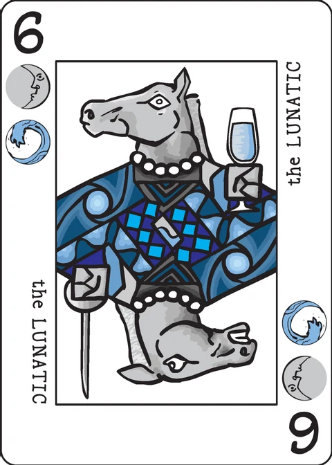

Hermit
a trick-avoidance game for 2–5 players · 30 minutes · no extra material
You're a hermit who tries to avoid having people follow you home. So are all of your opponents.
The daily life of the hermits is represented by tricks of cards, and there will typically be more than one trick in play at a time. The goal is to avoid taking tricks with personality cards in them. Tricks that don't have personalities in them don't matter one way or the other.
There will typically be more than one trick in play at a time. Until it's completed, a trick is kept on the table in front of the player who played the highest card in the trick. When a fourth card is played on a trick, the player with the trick in front of them takes it.
The goal is to avoid taking tricks with personality cards in them. Tricks that don't have personalities in them don't matter one way or the other.
Setup
Randomly pick a dealer for the first hand. In subsequent hands, the player on the old dealer's left is the new dealer.
The dealer deals out the entire basic deck. (Three players get 12 cards each. Four players get 9 each.) The player on the dealer's left takes the first turn.
Game play
Here's an outline of what happens on your turn; details are provided below.
- If there are no tricks in play, every player selects a card to start a new trick.
- You (the player whose turn it is) must play one card on an existing trick if you can; a card can be played on a trick if it shares a suit with the last card played on the trick.
- If the card you played controls the trick, move the trick in front of you.
- If the card you played is the fourth card in the trick, the trick is complete. Whoever has the trick in front of them takes all of the cards. That will be you if you just took control of the trick.
1. Starting tricks
If there are no tricks in play, each player looks at their hand and selects one card with which to start a trick. Players reveal their choices simultaneously by flipping their card up in front of them. This makes one uncompleted trick per player.
Note that this will definitely happen on the first turn of the hand, and it will probably happen at least once more during the hand. The card you play to start a trick does not count as your card play for the turn.
2. Playing a card
You must play on an existing trick if possible. The new card should be stacked at a slight offset, so that everybody can readily see how many cards are in the trick.
A card added to a trick must share a suit with the last card played in the trick; only the most recent card matters for following suit.
If you do not have cards in the suits of any of the in-progress tricks, select a card from your hand and put it in front of you to start a new trick. This ends your turn.
3. Controlling a trick
If the card you add to a trick is the highest ranked card in the trick, move the trick in front of you. If it is tied for highest, move it anyway. If a trick is already in front of you when you control it, it stays there.
Aces are low, below 2s.
Crowns ( )
are ordinarily high, above 9s. The one exception is when the Ace and
)
are ordinarily high, above 9s. The one exception is when the Ace and
 of the same suit are present in the same trick. In that case, the Ace cancels the
of the same suit are present in the same trick. In that case, the Ace cancels the
 !
A cancelled
!
A cancelled  is lower even than an Ace.
is lower even than an Ace.
An Ace may be played before or after the  that it cancels.
that it cancels.
4. Completing a trick
If you played the fourth card in a trick, then the trick is complete. The player with the trick in front of them, which will be you if you just played the high card in the trick, takes the cards from the trick and puts them in a scoring stack face down in front of them.
Play continues clockwise around the table.
Scoring
The hand ends when all players' card have been played.
At the end of the hand, there may be unfinished tricks left on the table — tricks with three or fewer cards in them. Any cards in unfinished tricks are set aside.
Players score points for any personality cards in tricks that they took. (Personality cards
are the ones done up as face cards, with two close-ups of a single figure.) Each is worth its
rank. For example, the Lunatic 6

 is worth 6 points. The two
is worth 6 points. The two  personalities (the Bard and Huntress) are each worth 10 points; they're worth
10 regardless of whether or not they were in the same trick as the matching Ace.
personalities (the Bard and Huntress) are each worth 10 points; they're worth
10 regardless of whether or not they were in the same trick as the matching Ace.
When a player reaches a predesignated target score, the game ends. For the sake of having an official number, I recommend playing until some player reaches a cumulative score of 66 points or more; with four players, this typically takes three to five hands. The player with the lowest score when the game ends is the winner.
Example: Here is the progress of one trick, although there will probably be others in progress at the same time. Buck plays a, which is higher than the 3. This controls the trick, so he takes the cards and puts them in front of him: the 3

and the
Maris plays an Ace. The Ace neutralizes the
Jane plays a 5. Since the
This also completes the trick (because it's the fourth card), so she moves the cards from in front of her into her scoring stack.
Hermit for Five
With five players, the game becomes more chaotic.
Each player is dealt 7 cards. This leaves one card leftover.
The remaining card is placed face up in the middle of the table on the first turn, when players start tricks for the first time. The card starts a trick which belongs to no one, at least initially. Higher cards will control it as usual. If the trick is completed without any player controlling it, then point cards in the trick don't count against anyone.
Hermit for Two
Playing Hermit with 2 players follows nearly all of the basic Hermit rules but there are a few things added to provide tension that is often elusive in a 2 player trick taking game. The following is written as if you had a basic understanding of how to play Hermit.
Setup
Shuffle and deal 4 cards off to the side (we'll call this pile The Cottage) and the rest evenly
between the players; they should each have 16 cards.
Gameplay
Follow normal rules with one exception: Whenever all the tricks are cleared from the table,
each player selects one card from their hand and secretly adds it to the Cottage. They then
proceed to start new tricks.
Note: This does not include the very first trick of the game
It is helpful to keep track of how many tricks each player takes as that will affect scoring.
Scoring
Scoring works as normal except that the player who took fewer tricks will also score points for
any personalities in the Cottage. If both players took an equal number of tricks the Cottage is
discarded.
Lowest score after each player has dealt twice is the winner.
Note: The Pleasant Company and House Party variants are not as necessary in the 2-player version. If you must include one it is recommended to use the House Party variant only with the following changes: If only one player takes points during the play, their opponent scores those points and the cottage is discarded.
Variants
Some players prefer a longer game and play to 100 points.
Pleasant company
Certain groups of people are not as annoying if you can get them together.
If a player takes all four Moon personalities (2

 ,
6
,
6 
 ,
8
,
8 
 ,
and
,
and 
 ),
those cards are together worth zero points instead of 26.
),
those cards are together worth zero points instead of 26.
If a player takes all four Sun personalities (3

 ,
6
,
6 
 ,
8
,
8 
 ,
and
,
and 
 ),
those cards are together worth zero points instead of 27.
),
those cards are together worth zero points instead of 27.
A few points of strategy… If one player is going for Moons and another for Suns, they will
both need the Diplomat (8 
 ).
And it may be worth taking the Author (2
).
And it may be worth taking the Author (2

 )
or the Painter (3
)
or the Painter (3 
 )
just to stop them.
)
just to stop them.
House Party
What's better than throwing a houseparty? Why, throwing it at someone else's house and not going of course!
If one player is the only one to gather any personality cards, they do not score the points as usual; instead, the points are split evenly between the other players. (Points for Moons and Suns are not zeroed out, even if the Pleasant Company variant is otherwise being used.) This may be achieved even if there are personality cards in unfinished tricks at the end of the hand.
Appendix: personality cards
| the Author | 2 | |
| the Painter | 3 | |
| the Savage | 3 | |
| the Sailor | 4 | |
| the Soldier | 5 | |
| the Lunatic | 6 | |
| the Penitent | 6 | |
| the Diplomat | 8 | |
| the Merchant | 9 | |
| the Bard | ||
| the Huntress |
Links
Note on this implementation
Two players only: this app plays the wiki's Hermit for Two — the basic 36-card deck, four cards dealt to the Cottage and sixteen to each player, four hands long ("lowest score after each player has dealt twice"). The three-to-five-player deals, Hermit for Five and the Pleasant Company / House Party variants are not implemented.
The Cottage timing: "whenever all the tricks are cleared from the table … Note: This does not include the very first trick of the game" is read as exempting the opening simultaneous start of each hand (where the table also holds no tricks), so every later clearing of the table costs each player one face-down card before the new tricks start. Both choices are made behind the pass screen and neither is shown until both are made; the Cottage itself stays face down until the hand is scored, when its point total appears in the hand summary.
Ace cancels Crown: when an Ace and the Crown of the same suit share a trick, that Crown's value drops below every Ace no matter which was played first. Control of a trick only moves when a played card is highest (ties included, per "if it is tied for highest, move it anyway"), so a Crown already in front of a player keeps the trick when a later low card lands — until a card actually overtakes it.
Playing out: the hand ends when both hands are empty, even if that leaves tricks with three or fewer cards; those are set aside and score for nobody, exactly as the Scoring section says. During play you must add to a trick you can follow; only when you are void in all of them may you start a new one.
Scoring and the target: personalities score their rank (Crowns 10), the player who took fewer tricks also scores the personalities in the Cottage, and equal trick totals discard it. The 66-point target in the general rules is advice for three to five players, so this app simply plays the four hands and gives the match to the lowest total (a level total is a draw).
Suit names: the wiki's Wyrms and Knots are the app's Daemons and Crowns — the same two suit symbols under their older names (the app's reference page lists them as "Daemons (Wyrms)" and "Crowns (Knots)").
Pass and play: this is a hidden-hand game, so between turns the screen is covered with "Player N's turn" until the device is passed on and the hand is revealed.
Credits
Design: P.D. Magnus, inspired by a non-Decktet game that was codesigned with Dean Howard.
Playtesters included Cristyn Magnus, Karen Traite, Chris DeLeo, John Milanese, Nathan Morse, Doug Hoover, Quentin Hudspeth, Dan Purdy, Maya Kiehl, Tom Kiehl, and Steven Kiehl.
These rules are copied from the Hermit page of the Decktet wiki (page revision 18, 9 January 2014) so they can be read offline, under the wiki's CC BY-NC-SA 3.0 licence. Cards by P.D. Magnus, same licence.
Further reading: Hermit at BGG, the two-player variant thread.